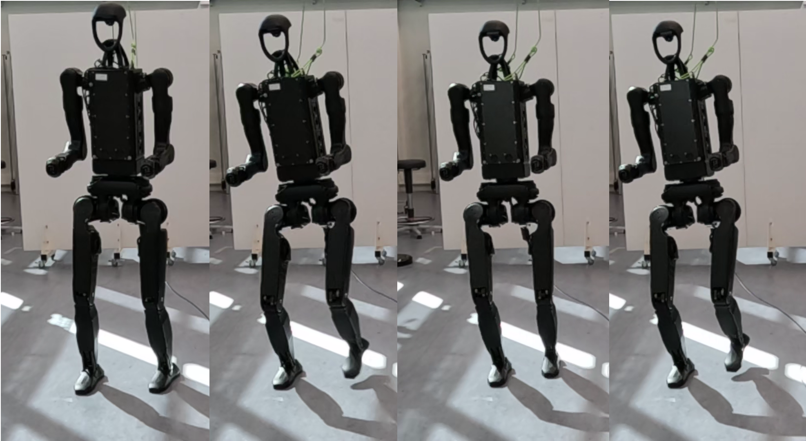

Overview
Can a network constrained to resemble a biological neural culture control a full-size humanoid? We build a spiking network of 512 leaky integrate-and-fire neurons arranged as a 3D assembly on a microelectrode array, train it by distilling a reinforcement learning expert, and compare four training schemes that differ only in how the error signal reaches the synapses, from a frozen reservoir to exact gradients.

Abstract
Biologically inspired neural oscillators have already made humanoid robots walk, spiking networks have controlled simulated humanoids, and spiking models can reproduce the activity of in-vitro neural cultures. Whether a network grounded in such a culture and trained by biologically plausible learning rules can keep a full-size humanoid balanced in closed loop remains, however, an open question. We study this problem by proposing a biologically inspired spiking network, trained by different learning schemes, compared in simulation and deployed on the H1-2 Unitree humanoid. These schemes differ in how recurrent weights are trained. Ordered from most to least biologically faithful, they are: a fixed reservoir mimicking an in-vitro neural culture, where recurrent weights are kept frozen and only a linear readout is trained, the same network but with its synapses trained by reward-modulated spike timing dependent plasticity and eligibility propagation, and finally backpropagation through time as a non biological baseline for comparison. All schemes relied on distillation of a reinforcement learning expert policy with dataset aggregation. In simulation, we show that e-prop reached a 100% survival rate, matching backpropagation through time, whereas both the fixed reservoir and the reward-modulated STDP, though the closest to biological cultures, plateaued at a much lower performance (∼43.7% and ∼11% survival). We explore in further detail which trends a real culture could and could not produce until now. Finally we demonstrate brief bipedal stepping on the full size humanoid H1-2: the e-prop network produces genuine bipedal walking for 3–9 s, but every hardware trial ended in a fall, so the hardware evaluation remains preliminary and the distilled policy is not yet viable on the real robot.
Approach
The network reads a 45-dimensional observation and produces 12 joint targets at 50 Hz, closing the loop around the robot through a PD controller running at 1 kHz. It never interacts with a reward: the reinforcement learning expert supplies labelled actions only, first by behavioural cloning and then by DAgger, so the expert corrects the network in the states the network itself visits.
Learning rules compared
All four schemes train the same network on the same data and receive the same dense, per-timestep error. They differ only in how that error reaches the recurrent weights, which isolates a single question: what does a learning rule need in order to shape a culture-like network into a working controller?
The three biologically motivated schemes are shown below. Backpropagation through time is the fourth, included only as an exact-gradient reference against which the local rules are validated; it requires error to travel backward in time, which a real culture cannot do, so it is not a candidate under the biological constraint this work adopts.
-
Fixed reservoir
Recurrent weights stay at their initial values. Only a linear readout is fitted, in closed form by ridge regression.
43.7% survival
-
Three-factor STDP
A global neuromodulator gates a local eligibility trace. Every synapse receives the same scalar, so a synapse that drove a useful command and one that contributed nothing are treated alike.
11.2% survival
-
e-prop
Each neuron receives its own learning signal, combined with an eligibility trace held locally at the synapse.
100% survival
Given identical error information, a single global scalar fails where a per-neuron signal succeeds, and e-prop's updates align with the exact gradient at a cosine similarity of 0.99.
Results
| Scheme | BC loss | Survival [%] | Velocity error [m/s] | Rate [Hz] |
|---|---|---|---|---|
| CaT expert | — | 100.0 | 0.09 | — |
| Fixed reservoir | 0.112 ± 0.002 | 43.7 ± 4.4 | 1.27 | 10.8 |
| BPTT | 0.065 ± 0.001 | 98.0 ± 3.0 | 0.73 | 10.9 |
| e-prop | 0.063 ± 0.002 | 100.0 ± 0.0 | 0.71 | 10.0 |
| Three-factor STDP | 0.724 ± 0.148 | 11.2 ± 1.8 | — | 158.1 |
Survival saturates for the expert and for e-prop alike, so the velocity tracking error is the metric that separates them: the distilled network keeps the humanoid balanced without following the commanded velocity closely.
Experiments
Simulation
-
Turning, 0.8 rad/s -
Lateral, 0.5 m/s
The e-prop-trained spiking network driving the H1-2 in MuJoCo, rendered from the trained checkpoint.
Hardware
-
Bipedal stepping on the H1-2 -
Second trial -
Third trial
Key findings
- The decisive factor is per-neuron credit assignment, as a global scalar broadcast to every synapse plateaus at 11.2% survival while e-prop reaches 100%.
- e-prop performs genuine credit assignment: its updates align with the exact backpropagation-through-time gradient at a cosine similarity of 0.99.
- A frozen reservoir is not sufficient. With only the readout fitted, the network reaches 43.7% survival, as the readout can form linear combinations of whatever features the fixed dynamics produce.
- On hardware the exact-gradient policy transfers no better than the biologically plausible one, which attributes the gap to the distillation setup both share rather than to the learning rule.
- Velocity tracking remains a limitation: 0.71 m/s error against the expert's 0.09 m/s. This is to be further investigated.
BibTeX
@inproceedings{atwi:hal-05860566,
title = {{Controlling the Humanoid Robot H1-2 With a Simulated
Biologically Plausible Network}},
author = {Atwi, Fatima and Roux, Constant and Bergaud, Christian
and Stasse, Olivier},
booktitle = {{IEEE RAS Proceedings on International Conference on
Humanoid Robots}},
address = {San Francisco (CA, USA), United States},
year = {2026},
month = Dec,
url = {https://hal.science/hal-05860566},
hal_id = {hal-05860566},
hal_version = {v1}
}